Meeting Bharat Ratna Prof. C. N. R. Rao – A Cherished Honour
It was a great privilege to meet Bharat Ratna Awardee, Padma Vibhushan Prof. C. N. R. Rao on the occasion of his birthday. I had the honour of presenting him with my handmade 2D micro-detailed model of the DRDO AEW&C "NETRA" aircraft — India’s very own Eye in the Sky.
The model symbolises a tribute to India’s indigenous aerospace advancements and reflects my initiative to promote defence and aerospace awareness through art, education, and innovation.
Meeting one of India’s most respected scientists and receiving his blessings was a truly inspiring and unforgettable moment that will continue to motivate me in my journey of spreading aerospace awareness.
Meeting Hon’ble Civil Aviation Minister Shri Kinjarapu Ram Mohan Naidu – An Inspiring Interaction
During the AeSI AGM & Vikshit Bharat Conference 2025 held at DRDO Pune, I had the privilege of exhibiting my stall featuring indigenous handmade 2D fighter aircraft models. Shri Kinjarapu Ram Mohan Naidu, Hon’ble Minister of Civil Aviation of India, visited the stall and showed keen interest in the aircraft models on display.
I had the honour of personally explaining the design, development process, and unique indigenous features of each aircraft. His encouragement and thoughtful interaction made the experience truly memorable.
The meeting highlighted the importance of innovation, creativity, and self-reliance in India’s aerospace sector, motivating me to continue my efforts in spreading awareness through art, education, and innovation.
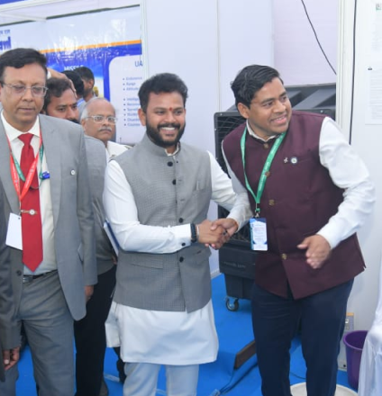
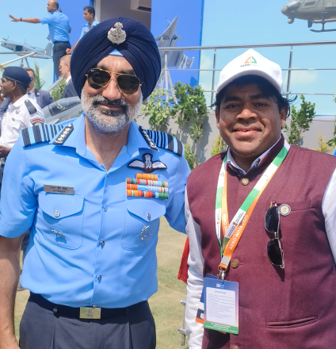
Meeting Air Chief Marshal Amar Preet Singh – A Truly Inspiring Moment
During Aero India 2025, I had the unique and memorable opportunity to meet the Chief of the Air Staff (CAS), Air Chief Marshal Amar Preet Singh. He graciously appreciated and blessed my voluntary efforts in promoting aerospace and defence awareness among students.
He extended his best wishes for my ongoing initiative — a volunteer aerospace and defence awareness campaign across government schools — and for my special sessions featuring live aircraft demonstrations followed by a 2D aircraft model exhibition.
His words of encouragement were deeply inspiring and have given me powerful motivation to continue my mission of fostering awareness, curiosity, and pride in India’s aerospace and defence capabilities at the grassroots level.
Meeting General Upendra Dwivedi – An Encouraging Experience
During Aero India 2025, I had the unique and memorable opportunity to meet the Chief of the Army Staff (COAS), General Upendra Dwivedi, PVSM, AVSM. He graciously appreciated and blessed my voluntary efforts in promoting aerospace and defence awareness among students.
General Dwivedi extended his best wishes for my ongoing initiative — a volunteer aerospace and defence awareness campaign across government schools — and for my special sessions featuring live aircraft demonstrations followed by a 2D aircraft model exhibition.
His words of encouragement were deeply inspiring and served as a strong motivation to continue my mission of fostering awareness, curiosity, and national pride in India’s aerospace and defence capabilities at the grassroots level.
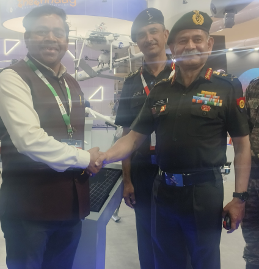
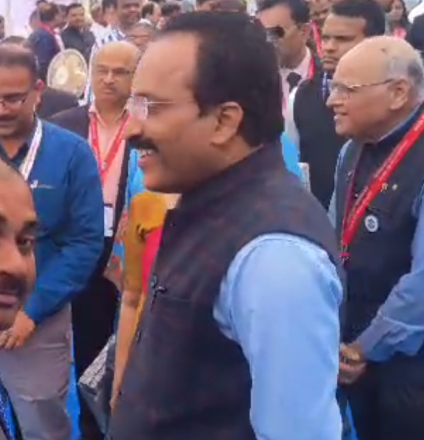
Meeting ISRO Chairman Dr. S. Somanath – A Truly Inspiring Interaction
During the AeSI AGM & Vikshit Bharat Conference 2025 held at DRDO Pune, I had the privilege of exhibiting my stall featuring indigenous handmade 2D fighter aircraft models. I was deeply honoured by the visit of Shri Dr. S. Somanath, Chairman of the Indian Space Research Organisation (ISRO), who showed keen interest in the models on display.
I had the opportunity to personally explain the design concepts, development process, and the unique indigenous features of each aircraft. His thoughtful appreciation made the interaction truly special.
The experience was both encouraging and inspiring, reinforcing the vital role of innovation, creativity, and self-reliance in advancing India’s aerospace sector and motivating me to carry forward my awareness initiatives with greater passion.
Meeting Dr. G. Satheesh Reddy – A Moment of Guidance and Inspiration
I had the profound honour of showcasing my handmade 2D indigenous Airbus C-295 aircraft model, crafted with intricate micro-detailing, to my Guru, Role Model, Chief Mentor, and Adviser — The Missile Man of India, Dr. G. Satheesh Reddy.
Dr. Reddy currently serves as Member, National Security Advisory Board (NSAB), President of the Aeronautical Society of India (AeSI), and Honorary Advisor to the Government of Andhra Pradesh. He is also the Former Secretary, Department of Defence R&D and Former Chairman, DRDO.
Sharing this creation with him was a deeply meaningful moment, as his visionary leadership and unwavering support have continuously inspired my journey in aerospace innovation and awareness. His appreciation and guidance remain a driving force behind my work.
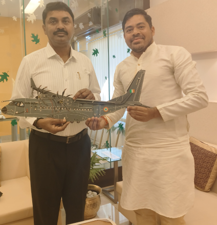
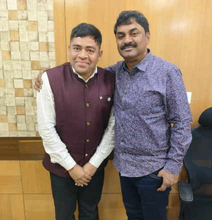
My Guru and Mentor – Dr. G. Satheesh Reddy
My Guru, Role Model, Chief Mentor, and Adviser — The Missile Man of India, Dr. G. Satheesh Reddy — currently serves as Member, National Security Advisory Board (NSAB), President of the Aeronautical Society of India (AeSI), and Honorary Advisor to the Government of Andhra Pradesh. He is also the Former Secretary, Department of Defence R&D, and Former Chairman, DRDO.
My Guru and Mentor – Dr. G. Satheesh Reddy
My Guru, Role Model, Chief Mentor, and Adviser — The Missile Man of India, Dr. G. Satheesh Reddy — Member of the National Security Advisory Board (NSAB), President of the Aeronautical Society of India (AeSI), Honorary Advisor to the Government of Andhra Pradesh, and Former Secretary DDR&D & Chairman DRDO — introduced me to the young and dynamic youth leader, Shri Tejasvi Surya, Hon’ble MP and President of the Bharatiya Janata Yuva Morcha (BJYM). I also had the opportunity to discuss with him my Volunteer Aerospace and Defence Awareness Campaign conducted across government schools.
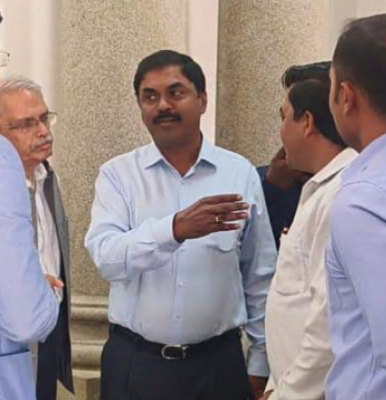
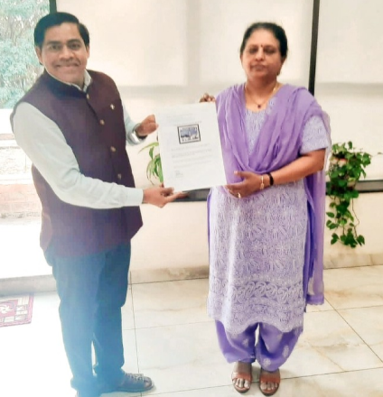
Meeting Dr. Tessy Thomas – The Missile Woman of India
I had the honour of presenting my handmade 2D painting, themed on "The Journey of ISRO," to my role model — the Missile Woman of India, Dr. Tessy Thomas.
This was a truly inspiring moment, as I also received her blessings and encouragement for my ongoing Aerospace and Defence Awareness Campaign, aimed at inspiring students in government schools across the country.
Her words of support further fuel my commitment to promoting scientific curiosity, national pride, and indigenous innovation among young minds.
Meeting Dr. Anuradha T.K. – The Satellite Woman of India
I had the honour of presenting my handmade 2D painting, themed on "NISAR (NASA-ISRO Synthetic Aperture Radar) and the Journey of ISRO," to my role model — the Satellite Woman of India, Dr. Anuradha T.K.
It was a truly inspiring moment to receive her blessings and encouragement for my ongoing Aerospace and Defence Awareness Campaign, dedicated to inspiring students in government schools across the country.
Her kind words and support have further strengthened my commitment to nurturing scientific curiosity, national pride, and a spirit of indigenous innovation among young minds.
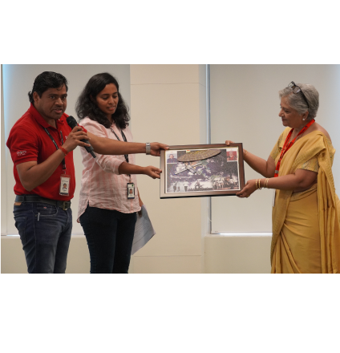
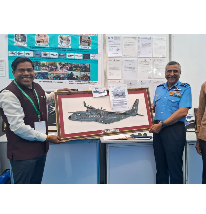
Meeting Air Marshal – A Memorable Highlight at AeSI AGM & Vikshit Bharat Conference 2025
During the AeSI AGM & Vikshit Bharat Conference 2025 held at DRDO Pune, I had the honour of showcasing my stall featuring indigenous handmade 2D fighter aircraft models.
The highlight of the event was the visit of the Air Officer Commanding-in-Chief (AOC-in-C), Air Marshal, who took a keen interest in the display. I had the privilege of personally explaining the design, concept, and indigenous features of each aircraft model.
His engagement and appreciation were truly motivating and served as a recognition of the effort put into promoting self-reliance and innovation in aerospace.
Meeting Esteemed Scientists, Defence Experts, and Social Leaders
I had the honour of meeting several esteemed scientists and experts from DRDO, ISRO, HAL, NAL, and the Indian Armed Forces — including the Army, Air Force, and Navy — as well as dedicated social workers.
These interactions were deeply meaningful, as I received their blessings and words of encouragement for my ongoing Aerospace and Defence Awareness Campaign aimed at inspiring students in government schools across the country.
Their support reinforces my mission to cultivate scientific curiosity, national pride, and awareness about India’s defence and aerospace achievements among young minds.
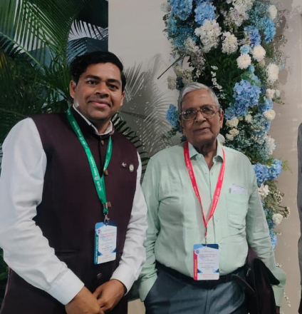
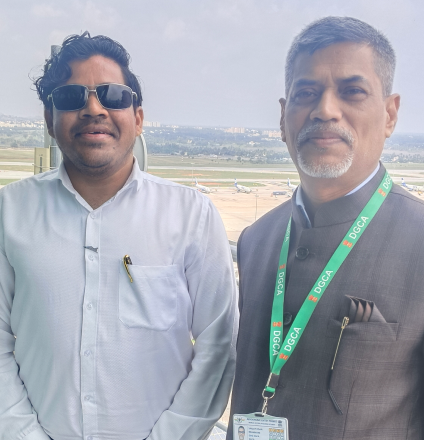
Meeting Shri Sanjay K. Bramhane – JDG, DGCA
I had the honour of meeting Shri Sanjay K. Bramhane, Joint Director General (JDG), Directorate General of Civil Aviation (DGCA), Ministry of Civil Aviation.
During our interaction, I received his blessings and encouragement for my ongoing Aerospace and Defence Awareness Campaign aimed at inspiring and educating students in government schools across the country.
His words of support were truly motivating and strengthened my commitment to fostering curiosity and awareness in the fields of aviation, aerospace, and national defence among young learners.
Meeting A.S. Kiran Kumar – Former ISRO Chairman
It was a moment of immense pride and privilege to meet the distinguished Space Scientist A.S. Kiran Kumar, Former ISRO Chairman, widely regarded as a "Scientist’s Scientist" for India's cost-effective and high-impact space missions, including the Mars Orbiter Mission (Mangalyaan) and Chandrayaan-1.
I received his blessings and encouragement for my ongoing Aerospace and Defence Awareness Campaign aimed at inspiring and educating students in government schools across the country.
His words of support were truly motivating and strengthened my commitment to fostering curiosity and awareness in the fields of aviation, aerospace, and national defence among young learners.
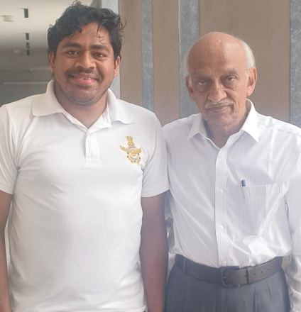